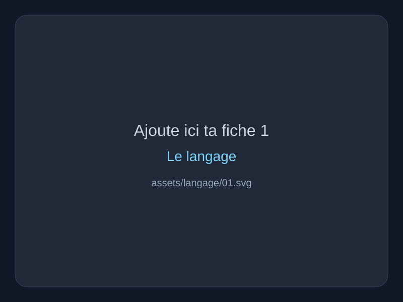
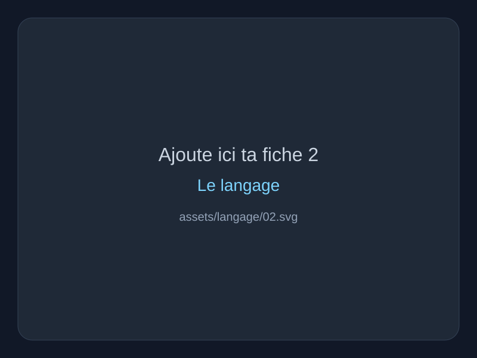
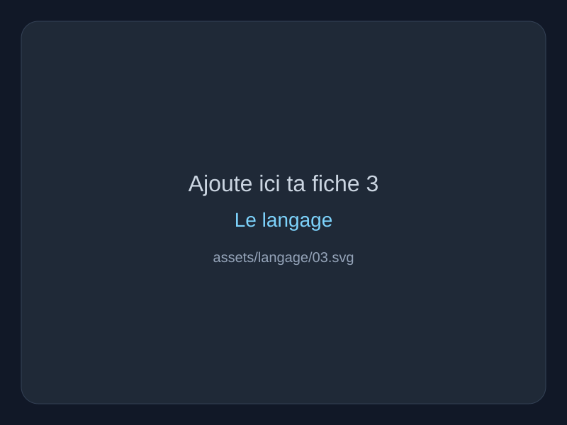

Définitions essentielles
- Le langage désigne la faculté humaine de produire des signes et de leur donner sens.
- Il sert à communiquer, mais aussi à penser, ordonner et transmettre un monde.
- Il ne faut pas confondre langage, langue, parole et discours.
Le langage comme médiation de la pensée, de la communication et du monde commun.
Si tu retrouves tes anciennes photos, remplace simplement ces fichiers dans assets/langage/ sans rien changer au HTML.



Avant un DST, tu peux relire uniquement les grandes distinctions utiles à l’explication de texte.
Le langage ne sert pas seulement à nommer : il permet aussi d'ordonner, persuader, promettre, mentir, créer du commun. Avec Bourdieu, la parole est aussi un rapport de pouvoir ; avec Bergson, tout n'est pas intégralement dicible.